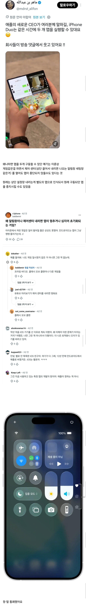

iOS가 정식으로 멀티태스킹을 지원한다면
상단바를 내려도 앱이 중단되지 않을 수 있음

iOS가 정식으로 멀티태스킹을 지원한다면
상단바를 내려도 앱이 중단되지 않을 수 있음
어떻게든 애플을 까고 싶어서 허위선동날조도 서슴치 않는구나
아이폰은 워낙 괴담이 많아서 이상한 소리해도 일단 믿는듯 ㅋㅋ
ㄹㅇ 아이패드 계산기 기능 추가가 진짜 충격이었음 어케 그딴소리를 믿냐
아이폰 폴드 멀티가 저렇게 되면 바로 넘어가지
미친 ㅅㅂ 그럼 아이폰은 그동안 안됐던거임???
2
포켓몬고 본계 부계 다돌릴때 제외하고 써본적이 없는 기능이긴 한데 흠


아이폰 못 써본 틀딱 개저씨들이라 아무 말이나 다 믿나 보네
여윽시 무식한 틀딱들 모임 답다
아이폰은 아저씨들이 더 쓸텐데
한글도 제대로 못쓰네
못써본게 아니라 안써본거다.
일할때 통화녹음이 필요해서
내용 낚은거냐??